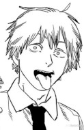

Selecione um personagem
- 


Denji
Denji é o protagonista de chainsaw man. Ele herdou uma dívida de seu falecido pai e começou a matar demônios para quitá-la. Em uma emboscada, Denji é morto com seu demônio Pochita, que se funde a ele. Denji volta a vida como híbrido de demônio e humano e é encontrado por Makima, que o oferece uma "vida normal" em troca de trabalhar como caçador de demônios. Ele é bem moleque, mas é cuidadoso com aqueles que se importa, visto na sua relação com Power e Nayuta.